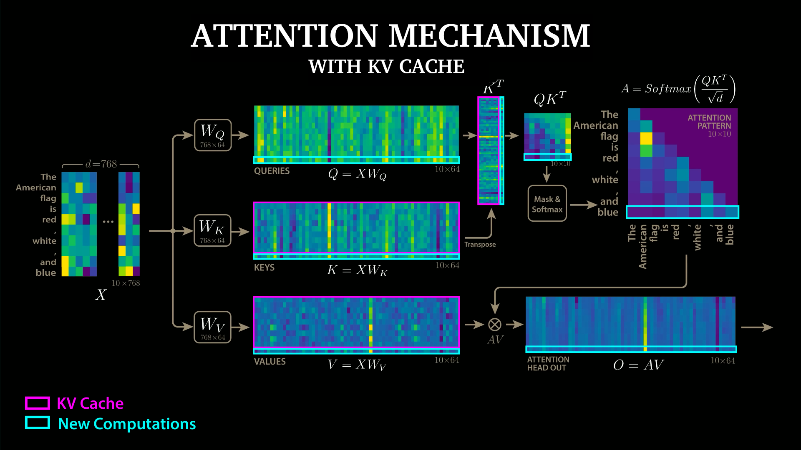
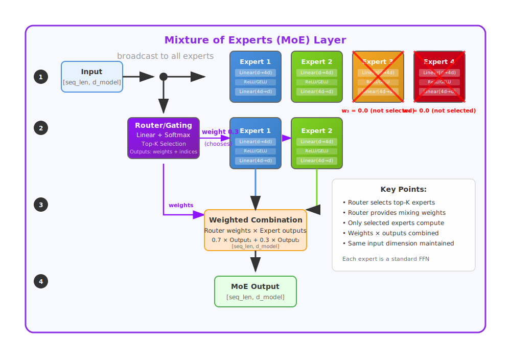

Mixture-of-Experts (MoE) Transformer — token → token
Compact pointer arrows between blocks. Bottom row begins under Attention and is offset one column to the right.
Pointer arrows
Attention
MoE
LayerNorm
KV Cache
Zoom
100%
Input
Prompt (text)
string
Output: text
Tokenizer
Tokenizer → IDs
[id₁,…,id_T]
Output: list[int] (T)
Embedding
Embedding Matrix
E∈ℝ^{V×d}; X=E[ids]
Output: X ∈ ℝ^{T×d}
Positional
Positional Encoding
RoPE / ALiBi
Output: Xᵖ ∈ ℝ^{T×d}
LayerNorm
LayerNorm
pre-attn
Output: ℝ^{T×d}
Attention
Multi-Head Self-Attention
H heads, dₖ=d/H
Output: Attn(X) ∈ ℝ^{T×d}
KV Cache
KV Cache
K,V ∈ ℝ^{T×H×dₖ}
I/O: append/read
Decode
Softmax + Sampling
p ∈ ℝ^{V} → id
Output: next id ∈ ℕ
LM Head
LM Head
xWᵀ, W∈ℝ^{V×d}
Output: logits ∈ ℝ^{V}
LayerNorm
Final LayerNorm
pre-LM head
Output: ℝ^{T×d}
Residual
Residual Add
… + MoE(x)
Output: ℝ^{T×d}
MoE
MoE Feed-Forward
Top-k, capacity, combine
Output: MoE(X) ∈ ℝ^{T×d}; G ∈ ℝ^{T×E}
LayerNorm
LayerNorm
pre-MoE
Output: ℝ^{T×d}
Residual
Residual Add
x + Attn(x)
Output: ℝ^{T×d}
Multi-Head Self-Attention — expanded
Hover over blocks for explanations. Outputs under each block.
Linear: Q,K,V
Q,K,V ∈ ℝ^{T×H×dₖ}
Output: Q,K,V
Split H heads
QKᵀ/√dₖ → softmax
A ∈ ℝ^{T×T×H}
Output: A
A · V ∈ ℝ^{T×H×dₖ}
Concat heads → Wᵒ
ℝ^{T×d}
Output: ℝ^{T×d}
→ Residual +

MoE Feed-Forward — vertical path
Hover over blocks for explanations. Router → Top-k → Capacity/Dispatch → Expert MLP → Combine.
Router: softmax(Wg·x)
Output: G ∈ ℝ^{T×E}
Top-k + Capacity
Output: indices/buckets
Expert i — MLP
Input x ∈ ℝ^{d}
W₁: d → d
ff
SwiGLU / GELU
W₂: d
ff
→ d
All-to-All + Combine
Output: ℝ^{T×d}
weighted by G

tip